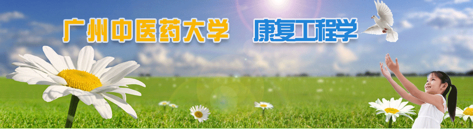

更多
随着社会经济发展、老龄化社会进程加快和疾病谱改变，人们对疾病、功能、残疾和健康等概念有了全新的认识。医学模式发生了两个重大改变，即从生物医学模式向“生物－心理－社会”模式的转变，从疾病治疗医学模式向“预防－保健－治疗－康复”医学模式转变，生物医学工程服务于医学，顺应着医学的发展和模式变化，同时也为这—转变创造必要的技术条件，促进转变。随着科技的飞速发展，与医学的结合日益深入，做为生物医学工程分支的康复工程也取得了巨大的进步，吸收并利用各种高新技术，成果广泛应用于康复医学领域。